Outpatient Blood Collection Room
外来採血室です。ここでは主治医の指示に従い、採血・採尿をお願いしています。
上記時間外は、各診療科へお戻りいただき採血をお願いいたします。
15:00～16:45は有人受付での対応となります。
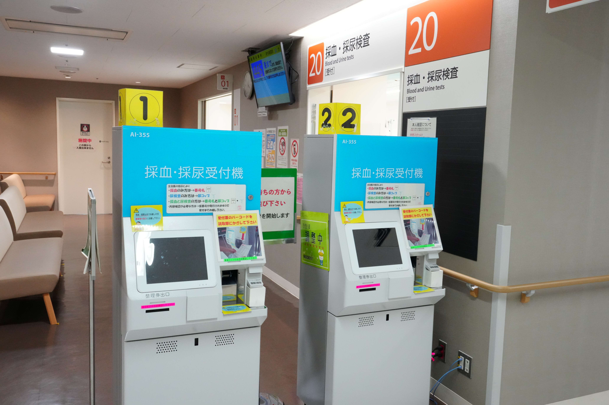
採血・採尿検査を受けられる方はこちらの「採血・採尿受付機」で受付をお願いします。受付票のバーコードを読み取り部にかざしてください。
ブザーが鳴った方はお手数ですが、有人受付までお越しください。
15:00～16:45は有人受付での対応となります。
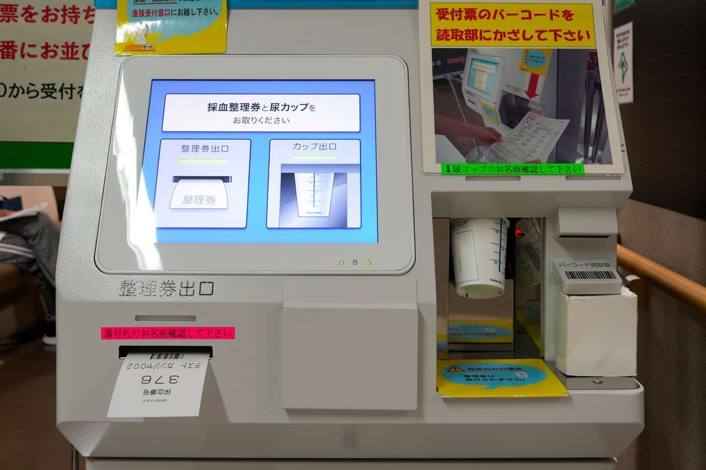
採血がある方は受付番号が、採尿がある方はお名前のラベルが貼られた採尿コップが出てきますので受け取ってください。採血・採尿の両方ともある方は両方ともお忘れなく受け取ってください。その際にはお名前にお間違いがないか、ご確認ください。
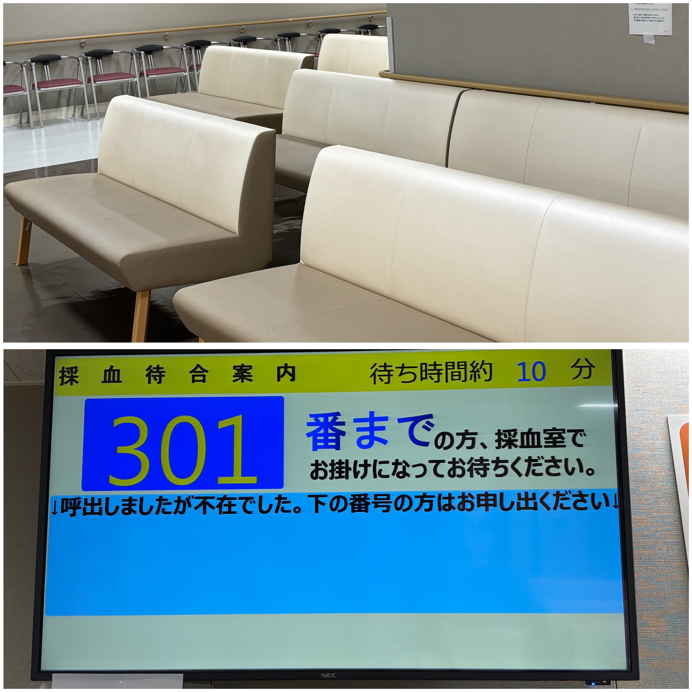
混雑時、採血までお時間をいただく場合がございます。待合ブースでお待ちください。
電光掲示板に受付番号が表示されましたら採血ブース内にお入りください。
採血の順番が来た時に、採血室にいらっしゃらなかった場合には、採血室内のモニターの「ご不在番号欄」に番号が表示されています。該当される方は採血室受付スタッフにお声掛けください。
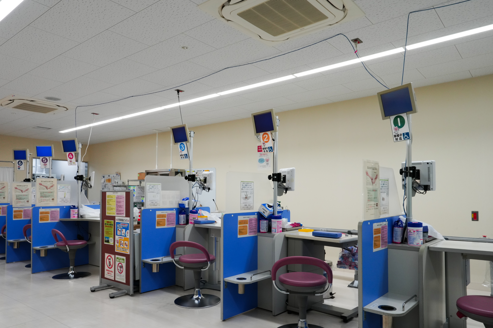
採血は全６ブースございます。受付番号が呼ばれるまでお時間をいただく場合がございます。
また、時間指定採血、車いすのままでの採血等で順番が前後する場合がございます。
下記に該当する項目がある場合は必ず採血前にお知らせください。
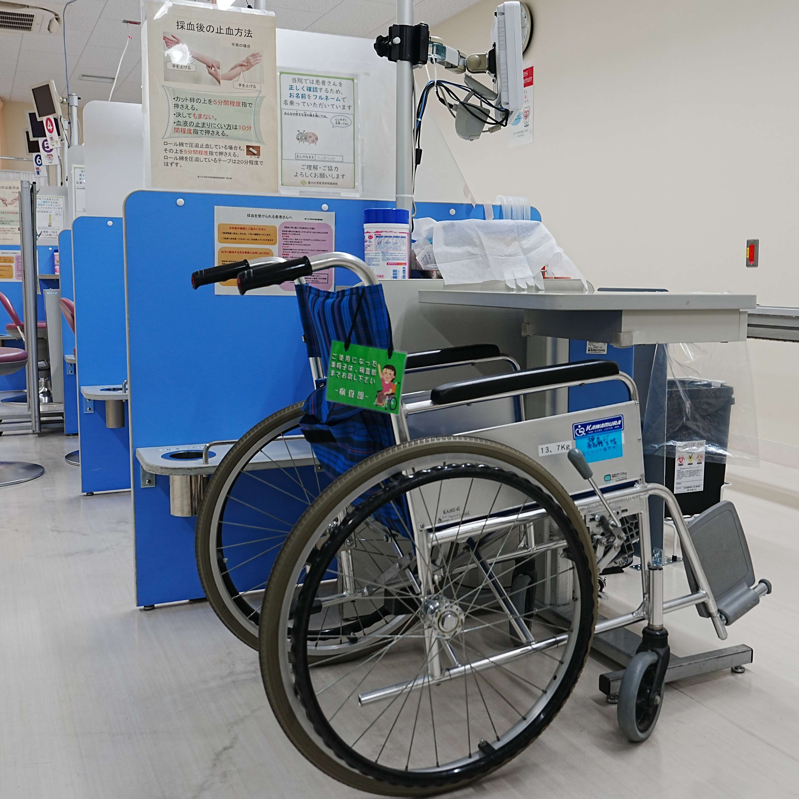
車いすのまま採血ができるブースは１～３番までの３ブース用意がございます。車いすのまま採血をご希望される方は気軽に採血室受付スタッフまでお声掛けください。その際、採血の順番が前後する場合がございます。ご了承ください。
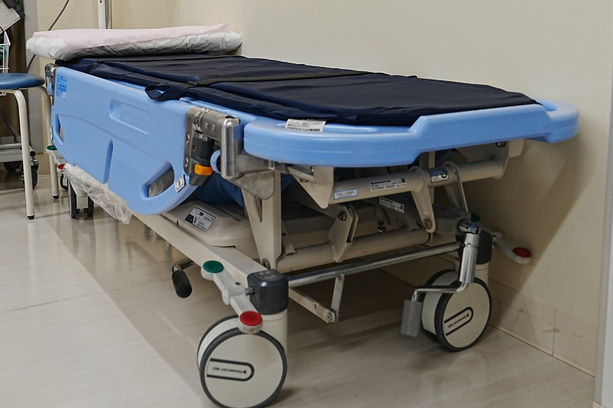
血管迷走神経反射(VVR)に備えてベッドを一台用意しております。VVRとは、迷走神経の過剰な刺激により心拍数と血圧が急激に低下し、失神やめまいなどを引き起こす反応です。以前にVVR等採血時にご気分が悪くなられたことがある方は、気軽に採血担当スタッフにお声掛けください。
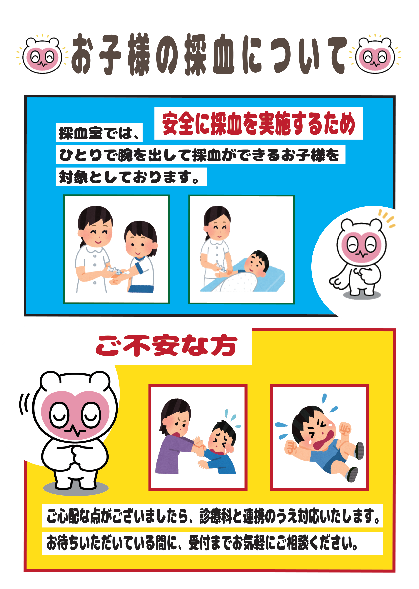
採血室では、ひとりで腕を出して採血ができるお子様を対象としています。ご心配な点がございましたら、診療科と連携のうえ対応いたします。
採尿検査を受けられる方は、「採血・採尿受付機」にて採尿カップを受け取りください。
ブザーが鳴った方はお手数ですが、有人受付までお越しください。
15:00～16:45は有人受付での対応となります。
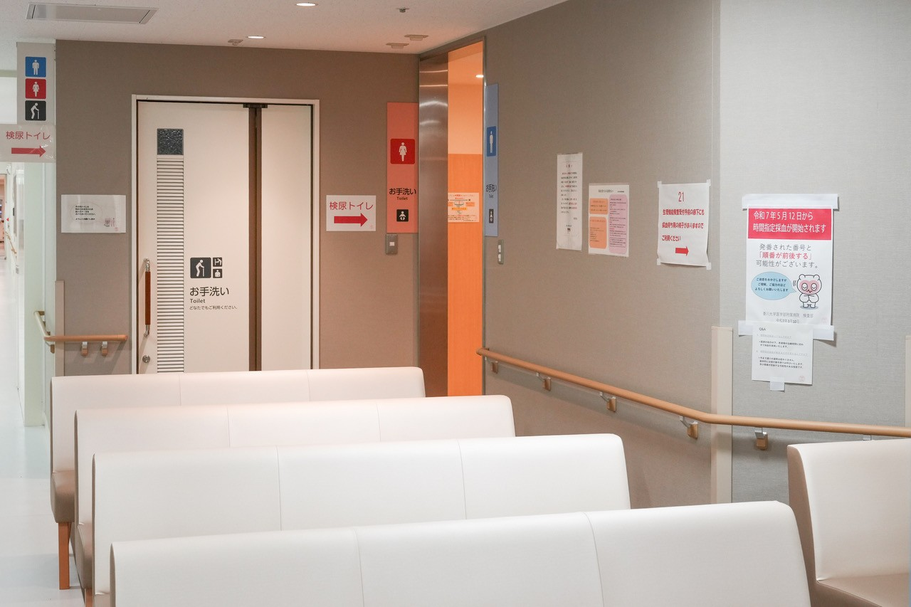
採血室向かいにある採尿お手洗いにて採尿いただき、ご自身で尿提出窓口までお持ちください。
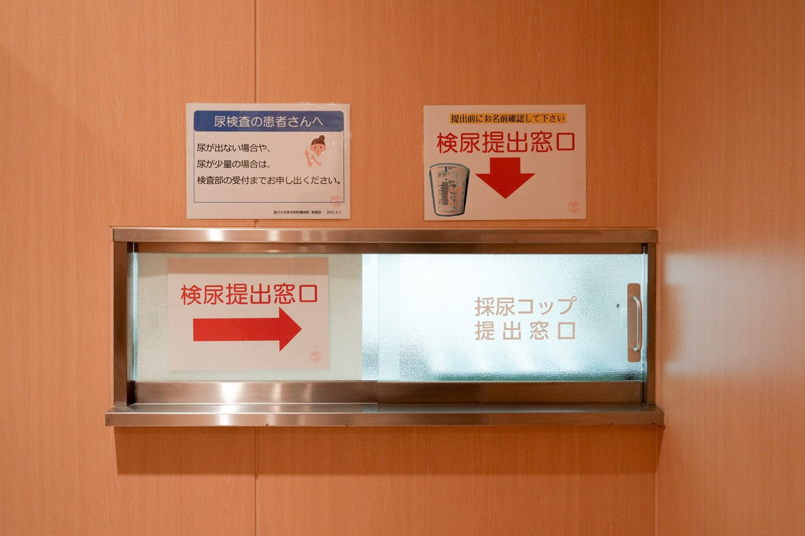
尿提出口はお手洗い奥にございます。
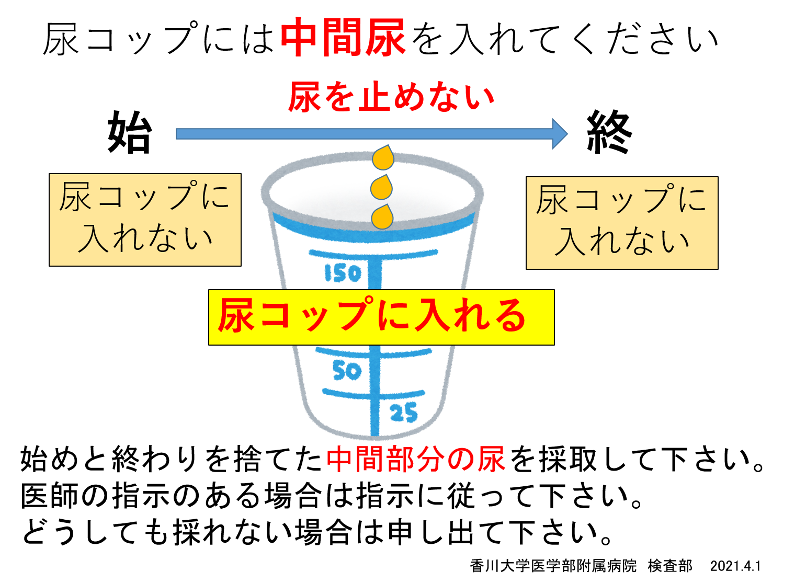
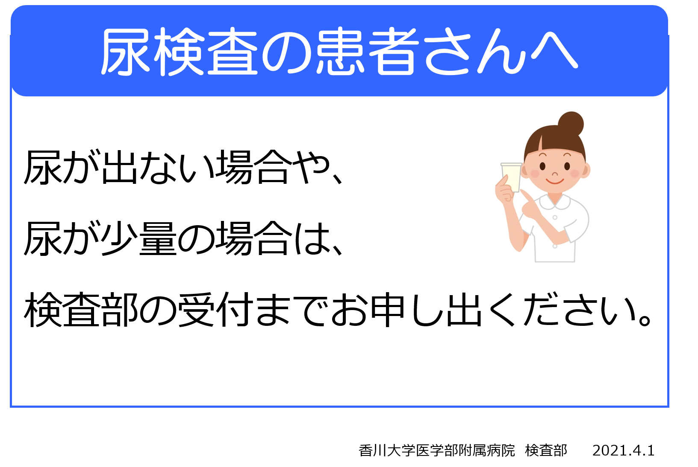
尿がどうしても出ない場合、尿量が少ない場合には必ず採血室受付スタッフへとお声がけください。すぐに検査に必要な尿量の確認を行います。また、生理中等で検査の実施ができない方もお声がけください。
キャンセルになる場合には会計のキャンセル処理が必要になるため、尿コップをゴミ箱などに捨てないでください。
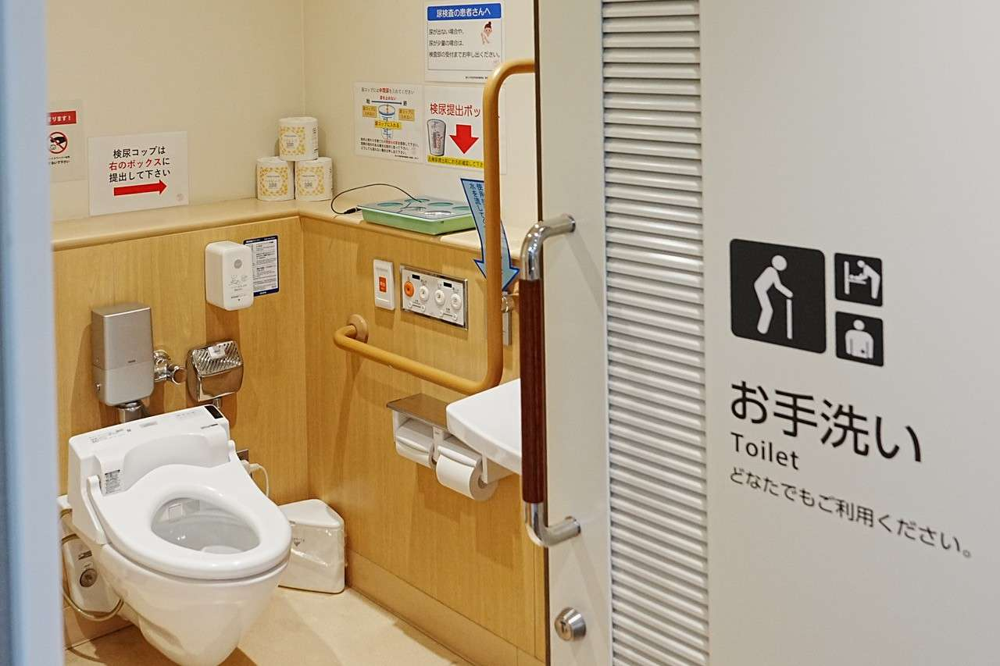
バリアフリーお手洗いがございます。車椅子の方や、お身体の不自由な方でもご利用いただきやすいよう、広めのスペースになっております。
手すりや緊急呼び出しボタンも設置しておりますので、必要時はご利用ください。
ご不明な点がありましたら、採血室受付スタッフまでお声かけください。
採尿コップはバリアフリーお手洗い内の提出ボックスの上に置いてください。検査部担当が尿コップを回収いたします。